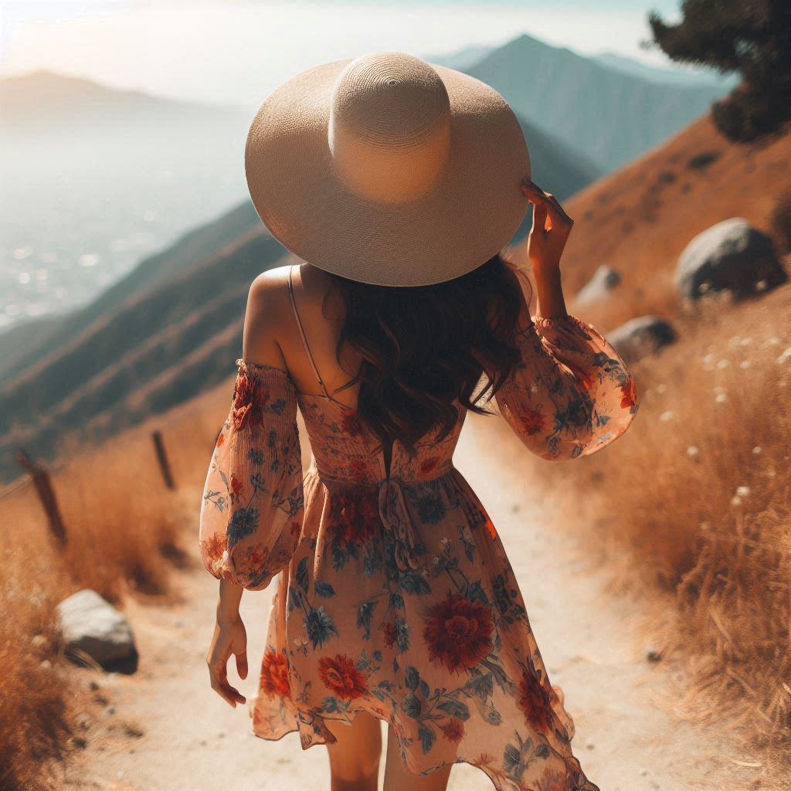
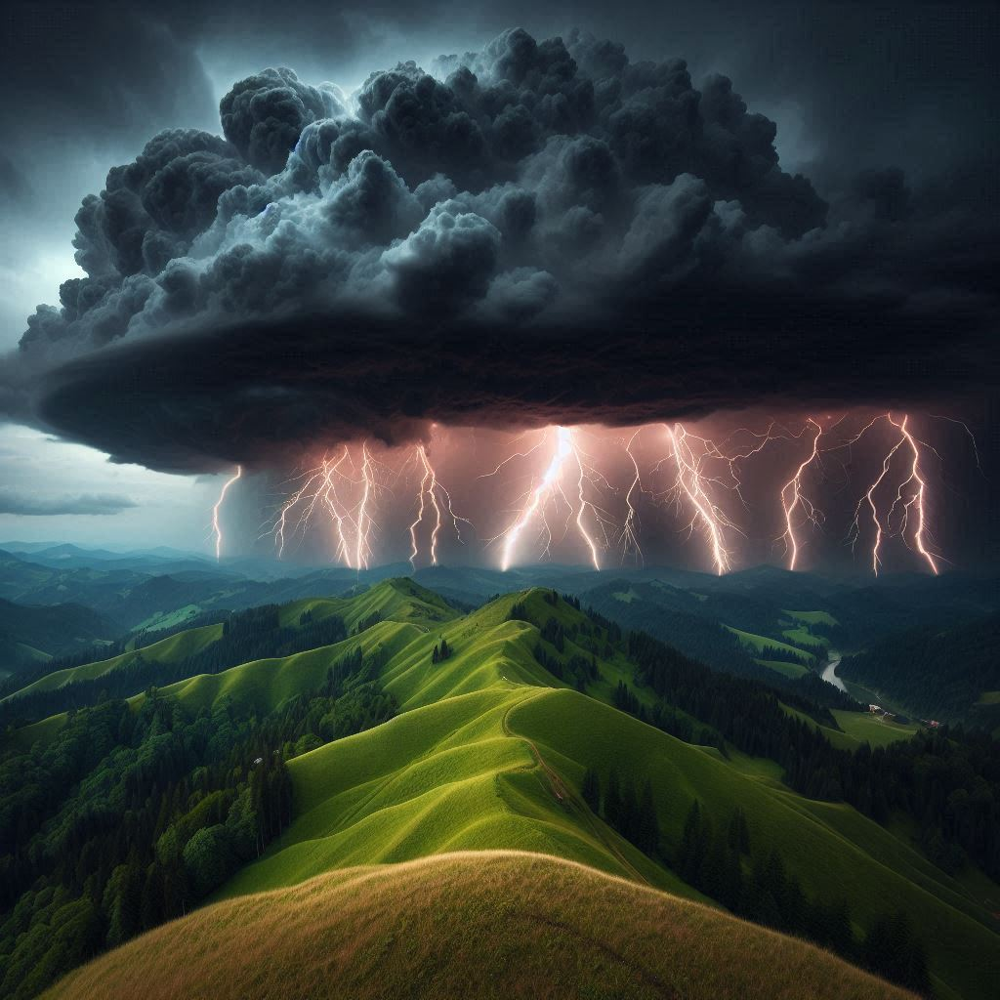
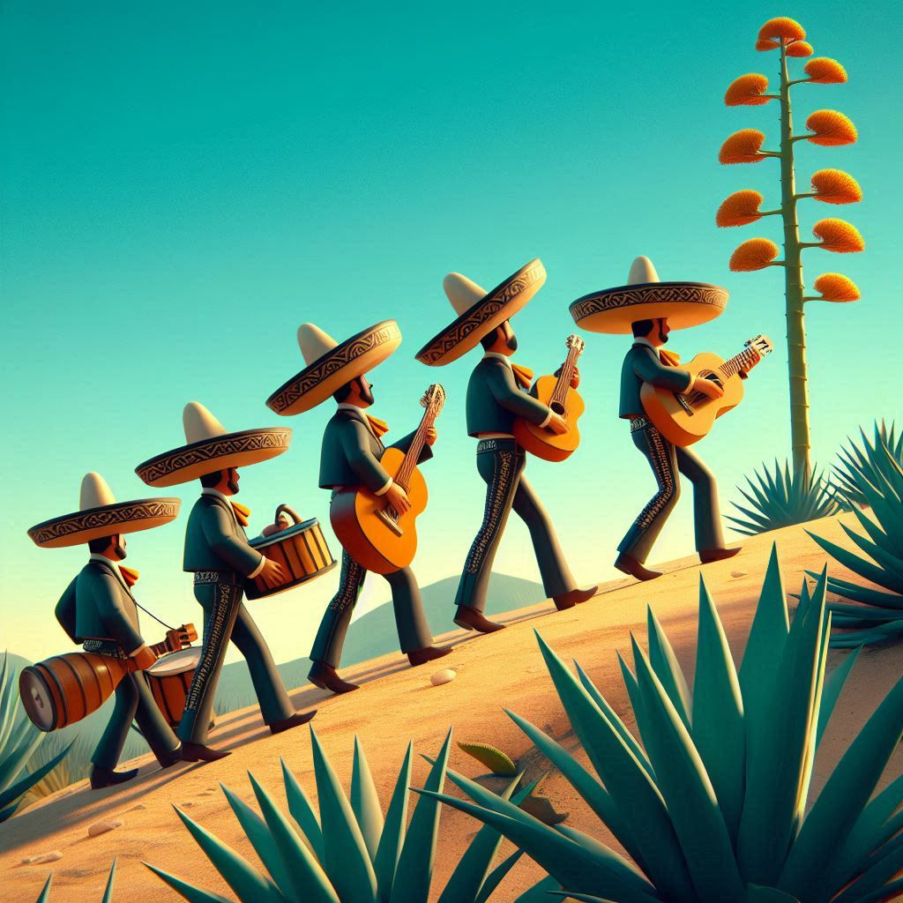
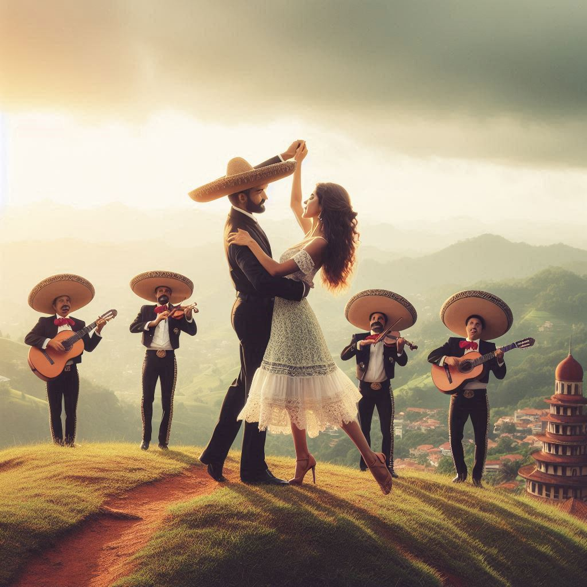

The Fairytale of the Mexican Princess!
We begin our story on the outskirts of El Jaguar, a small rural city in Jalisco, Mexico. As the sun rises to announce the new day a vast hill covered in agave plants comes into view. And at the base of this hill we find our heroine, Senorita Flores, a young Mexican Princess out on a stroll. 
"Whack whack whack." But what's this sound? Ah, on the other side of the hill is a young agave harvester, Don Ryan. He came from a far away land
to start his own tequila company, Ryansito, and searches everyday for the finest blue agave he can find.

As Don Ryan pauses to take a sip of agua con gas he notices Senorita Flores on the path. "Hola senorita!" he exclaims and she responds in kind. As they chat Senorita Flores suddenly notices an ominous cloud quickly approaching and points towards it in fear. Don Ryan turns to look and dread crosses his face. He knows this cloud...it's the notorious El Nino! 
They are far up the mountain with no shelter in sight and no time to escape! Senorita Flores grabs Don Ryan, "Who will save us?". But before the Don could respond a miraculous sight beheld them. A mariachi band was walking towards them. It was the famous Boogaloo Assassins on their way to their next performance! Suddenly Don Ryan had an idea. "Senorita Flores, I know what we must do! We must dance to drive away El Nino!" 
Waving towards the band Don Ryan yelled "No, no, no!" They knew immediately what to do and within moments the congas start thumping. Don Ryan said "We must dance, we must dance now!". He reached out his hand, embraced her, and they danced the ancient dance of the Salsa. 
As their feet pounded the dirt in a uno, dos, tres, cinco, seis, siete pattern, and the music rose around them, the power of El Nino weakened. By the time the song finished, the clouds had parted, and our dancers were basking in the sunlight. "Would you like to come back to my casa for a drink?" Senorita Flores asked, and the Don nodded. As our Princess and the Don walked back towards town, they waved fairwell to the band and wished them luck. The Boogaloo Assassins lowered their sombreros, bowed, and began marching to their next adventure. El Fin.